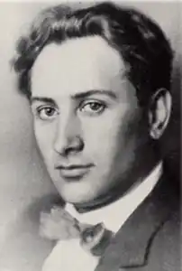
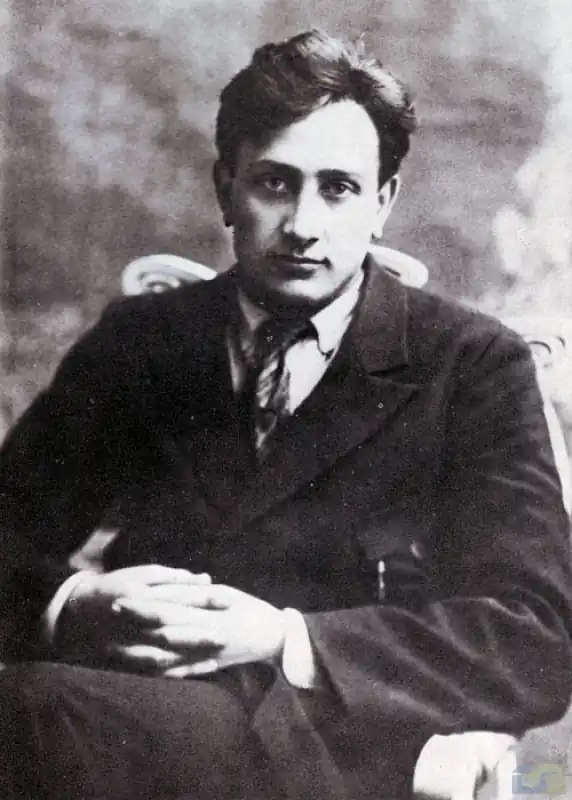

Валер'ян Поліщук (1898-1936)
Валер'я Львович Поліщук народився 1 жовтня 1897 року в селі Більче Дубенського повіту на Волині (тепер — Млинівський район Рівненської області) в сім'ї хліборобів. Після закінчення Мирогащанської двокласної школи навчався в міському училищі, згодом — у Катеринославській гімназії. 1917 року вступив до Петербурзького інституту цивільних інженерів, але, захопившись літературою, перейшов на історично-філологічний факультет тодішнього Кам'янець-Подільського університету. Працював у газетах "Селянська правда", "Вісті". Був у творчих відрядженнях у Франції, Німеччині, Чехословаччині, Скандинавії. Власну поетичну творчість розпочинав з переспівів лірики Олександра Олеся, С.Надюка та ін.
1919-го року видав поему "Сказання давнєє про те, як Ольга Коростень спалила", написану за мотивами відомого літопису та під впливом реалій громадянської війни. Згодом переїздить до Києва, де знайомиться з творчою молоддю. Особисте знайомство й спілкування з Павлом Тичиною спонукало Валеріана Поліщука переглянути підхід до власних поезій. Тичина заохотив його до пошуків нової художньої якості в ліриці. То були часи повного взаєморозуміння поетів. Вони навіть хотіли видавати спільний альманах або збірник, утворити Київську філію Всеукраїнської федерації пролетарських письменників, яку мав очолити Павло Тичина. Невдовзі керівником цієї ефемерної організації став Микола Хвильовий, з яким Валеріан Поліщук опублікував спільну збірку "2" (1922). Ранній Валер'ян Поліщук декларував "неореалізм пролетарського змісту, що виростав з революційного романтизму", мріяв створити синтетичне мистецтво, в якому б гармонійно поєдналися всі існуючі течії. Водночас у своєму пориванні до синтетичного мистецтва, мистецтва революційного динамізму, він обстоював ідею мистецтва універсального, поза часом і простором ("мистецтво не залежить від місця або нації, яка його створила"). Таку надію він покладав на альманах "Гроно" (1920), що було спробою "бодай хоч наблизитися до того істинного шляху" в мистецтві, який би відповідав духовній структурі "нашої доби великих соціальних зрушень". Прагнучи піднести поетичне слово до рівня запитів сучасності, поет великі надії покладав на верлібр як єдину віршовану систему, здатну передати стрімку ритміку нової доби. Віршовані верлібри склали основу першої збірки Поліщука "Сонячна міць" (1920), якою він вперше по-справжньому заявив про себе. Поліщук спершу належав до літературної організації "Гарт", але 1925 року заснував у Харкові модерністську групу "Авангард", що обстоювала програму конструктивного динамізму (за нею поезії належало оспівувати модерну цивілізацію і світ технічної революції). Проте Поліщук долав межі суто авангардистських постанов. І тому в його творчому доробку знаходимо поетичні пейзажі ("Цвіркуни", "Лан", "Нуга") зі збірки "Радіо в житах" (1923), які по своїй музичності і глибокому чуттю, можливо навіть не поступляться Тичині" (О.Білецький). Виступає В.Поліщук і як прозаїк, критик і теоретик літератури. Окремими виданнями побачили світ понад 50 його книжок, серед яких найпомітніші — "Книга повстань" (1922), "Ленін" (1922), "Дума про Бурмашиху" (1922), "Розкол Європи" (1925), "Пульс епохи" (1927), "Григорій Сковорода" (1929) та інші. 23 квітня 1932 року під приводом недостатнього зв'язку з письменницькими масами й зловживань вузькогруповою політикою, влада розпускає так звані пролетарські, а разом з ними й всі інші письменницькі організації. Натомість було створено Всесоюзну Спілку Совєтських Письменників з виразно комуністичною ідеологією. На чолі Спілки поставили Максима Горького. Українські письменників жорстко підпорядкували російському центру. Всі, хто так чи інакше продовжував орієнтуватися на Захід, на Європу, хто не бажав іти московським шляхом, хто пробував і далі експериментувати з формою, були приречені на знищення. Не оминула ця доля й Валеріана Поліщука. Наприкінці 1934 р. його, разом із М. Любченком, М. Кулішем, Г. Епіком, В. Підмогильним, В. Вражливим, Є. Плужником, В. Штангеєм, Г. Майфетом, О. Ковінькою було звинувачено у приналежності до так званого Центру антирадянської боротьбистської організації й заарештовано. На закритому засіданні виїзної сесії Військової колегії Верховного Суду СРСР 27-28 березня 1935 року Поліщуку винесено вирок: 10 років ізоляції в концтаборах. Він так і не вийшов на волю, бо наприкінці 1937 — на початку 1938 року окрема "трійка" УНКВД по Ленінградській області (голова — Л. Заковський, члени — В. Горін та Б.Позерн, секретар — Єгоров) оформила низку групових справ, засудивши до розстрілу 1825 соловецьких в'язнів, яких було переведено на тюремний режим (СТОН). За справою № 103010/37 р. найбільше було засуджено до розстрілу саме українців — Омеляна Волоха, Марка Вороного, Миколу Зерова, Антона Крушельницького, Миколу Куліша, Леся Курбаса, Юрія Мазуренка, Валеріана Підмогильного, Павла Филиповича, Клима Поліщука... Серед них був і Валеріан Поліщук. Оперативна частина Соловецької тюрми звинуватила їх у тому, що "залишаючись на попередніх контрреволюційних позиціях, продовжуючи контрреволюційну шпигунську терористичну діяльність, вони створили контрреволюційну організацію "Всеукраїнський центральний блок". Твори: Вибрані поезії (К., 1968).